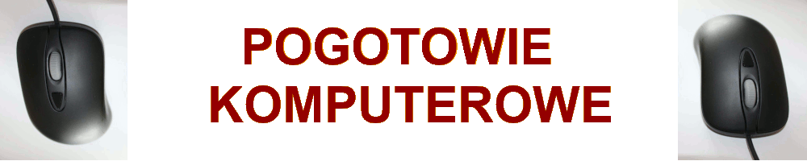

Kim jesteśmy?
Jesteśmy firmą z wieloletnim doświadczeniem w zakresie IT.
Co robimy?
- naprawiamy komputery stacjonarne i laptopy
- odzyskujemy dane
- usuwamy problemy z oprogramowaniem
- konfigurujemy sieć LAN
- i wiele więcej
Co nas cechuje?
Doświadczenie, niezawodność, konkurencyjne ceny
Autor strony: Fabian Latosiński 2P_1